RBE 502 Homework 2
By Alex Tacescu
Contents
clc; clear;
Question 1: State Space Form
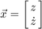
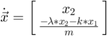
Question 2: Dynamic Equation in State Space Form
Given F = u:
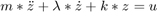
![$\dot{\vec{x}} = \left[\matrix{x_2 \cr \frac{u-\lambda*x_2 - k*x_1}{m}}\right]$](Homework2_eq17174922199719843209.png)
Question 3: Is the System Controllable?
Symbolically:
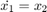
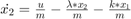
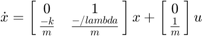
After substituting values: 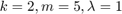
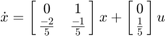
The system is controllable, because the system is reachable, since the matrix 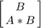 is full rank, as proven below
A = [ 0, 1;
-0.4, -0.2];
B = [0; 0.2];
matrix_rank = rank([B, A*B])
matrix_rank =
2
Question 4: Design a Setpoint Controller
Since system is stable at the origin, we can ommit from the input function
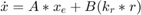
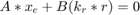 &&
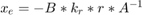
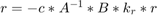
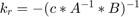
c = [1, 0]; y_r = 5; k_r = -inv(c * inv(A) * B) u = k_r * y_r
k_r =
2
u =
10
Plugging back into the equation above, we get:
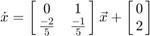
Question 5: Implement a Setpoint Controller in Matlab
Test 1:
x0 = 0; v0 = 0; [v_out, a_out] = Controller(x0, v0); disp("Test 1:"); disp("Output Velocity: " + v_out); disp("Output Acceleration: " + a_out);
Test 1: Output Velocity: 0 Output Acceleration: 2
Test 2:
x0 = -10; v0 = 16; [v_out, a_out] = Controller(x0, v0); disp("Test 2:"); disp("Output Velocity: " + v_out); disp("Output Acceleration: " + a_out);
Test 2: Output Velocity: 16 Output Acceleration: 2.8
Test 3: Test to make sure controller stabilizes around 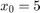
x0 = 5; v0 = 0; [v_out, a_out] = Controller(x0, v0); disp("Test 3:"); disp("Output Velocity: " + v_out); disp("Output Acceleration: " + a_out);
Test 3: Output Velocity: 0 Output Acceleration: 0
Test 4:
x0 = 5; v0 = 5; [v_out, a_out] = Controller(x0, v0); disp("Test 4:"); disp("Output Velocity: " + v_out); disp("Output Acceleration: " + a_out); function [v, a] = Controller(x0, v0) out = [0, 1; -0.4, -0.2] * [x0; v0] + [0; 2]; v = out(1); a = out(2); end
Test 4: Output Velocity: 5 Output Acceleration: -1